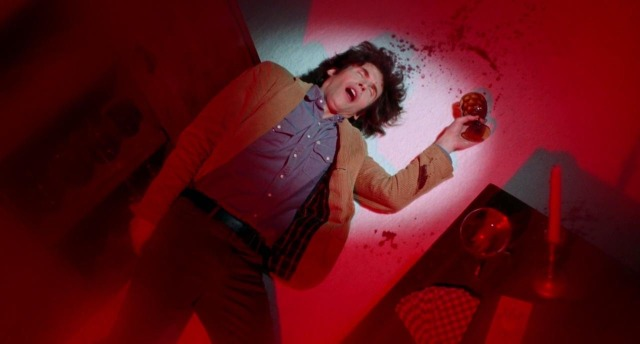
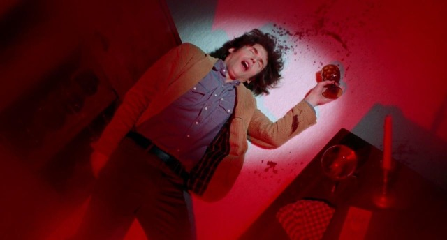
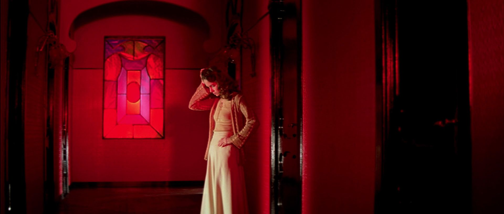
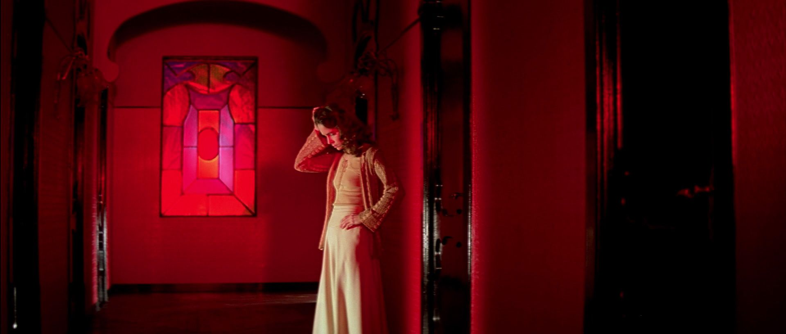
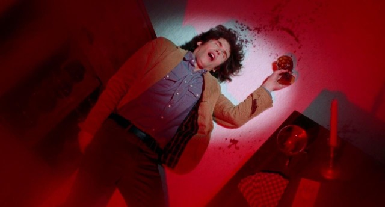
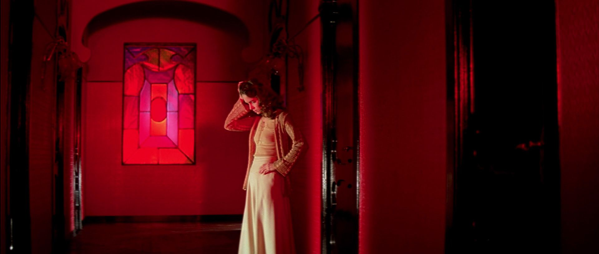

 



red ~ the self-destructive nihilist


red is one of the most emotive and eye catching colors, making it a favorite of many directors. it can instantly point the audience towards something, consciously or unconsciously. often people think that red represents true love, however it is usually used to represent either an untrue romance (Les Parapluies de Cherbourg, Carrie, The Love Witch), or a forbidden romance that is passionate, but not morally right (American Beauty, Oldboy, Ex Machina). red can also be used to represent danger or uncertainty (Cape Fear, Akira, The Shining), whether that danger manifests itself through a person or a place. red characters are often impulsive and cynical, believing they have no control over what is happening to them.
if you are :
a skeptic
self-destructive
pleasure-driven
you are a red character!